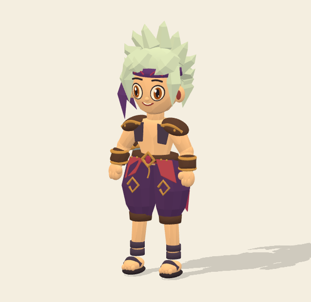
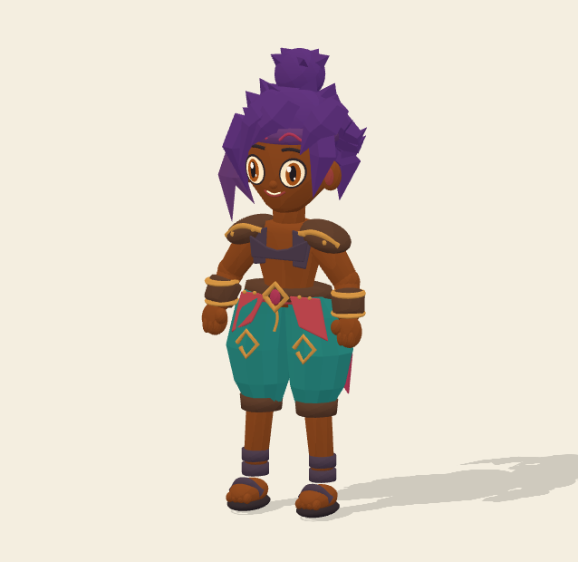

Proposition à valider. Le rendu entier est reconstruit en volume. L’original reste l’autorité visuelle ; les proportions, expressions, mèches, plis et motifs sont encore simplifiés. Ces images ne prouvent pas une fidélité artistique déjà acquise.


Exports natifs : 638 × 620 pixels. Provenance et empreintes RGBA. Les images sont affichées intégralement, sans retouche. L’atelier permet d’examiner profil, dos et surfaces sous les accessoires.
Écarts, reconstructions et état des critères ART-01 à ART-12